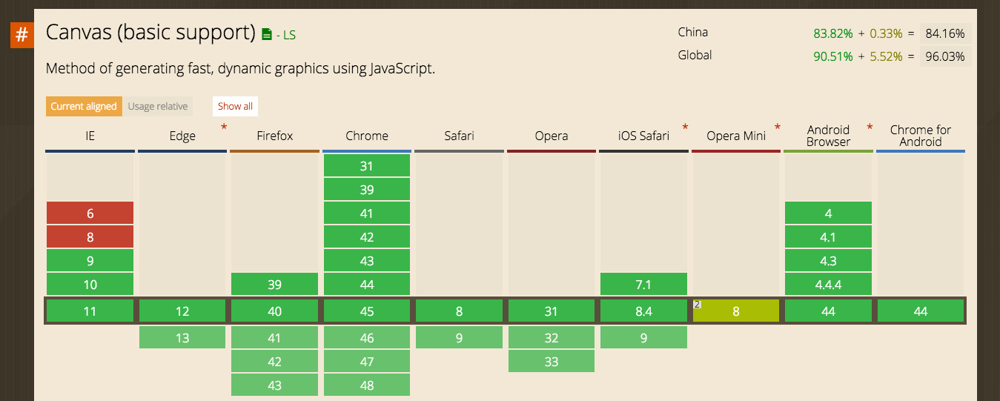
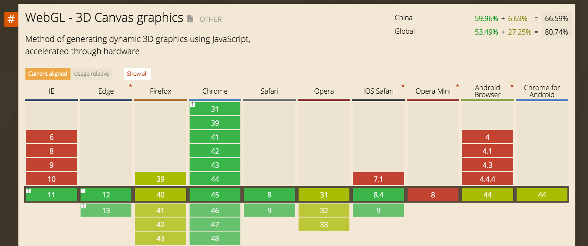

Created by ChaiChunyan / @chaichunyan

Canvas元素是HTML5的一部分，允许脚本语言动态渲染位图像。Canvas由一个可绘制地区HTML代码中的属性定义决定高度和宽度。JavaScript代码可以访问该地区，通过一套完整的绘图功能类似于其他通用二维的API，从而生成动态的图形。

WebGL是一种基于Web的Graphic库，由非盈利组织Khronos运营,目前结合HTML5元素广泛应用在3D图形开发中。
学习WebGL比较困难，因为它是底层开发——它运行在GPU上面，而且它实际上是一个OpenGL的JavaScript port，是一种游戏开发者使用的已经长期建立的API集。WebGL的主要受众是哪些已经拥有丰富OpenGL经验的游戏开发者，他们可以通过WebGL为web平台编写游戏。好在有很多资源可以帮助您学习WebGL，这些资源不仅仅是关于游戏开发的，还有很多奇幻的图形、视觉和音乐视频等方面。